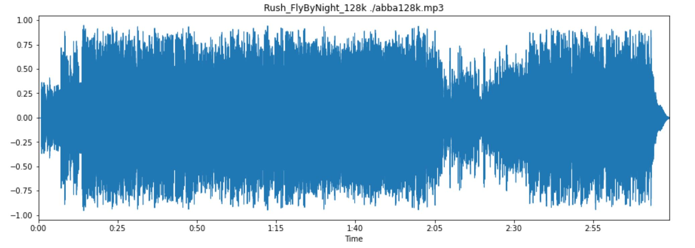
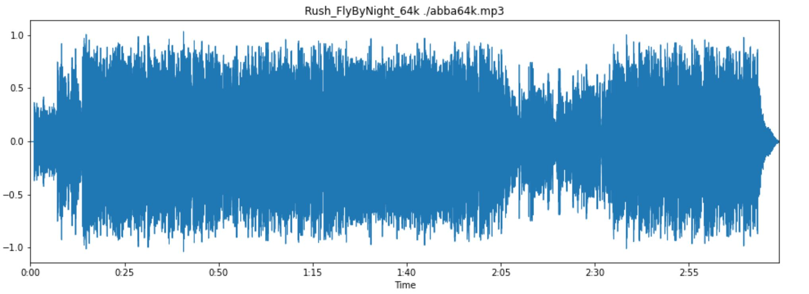
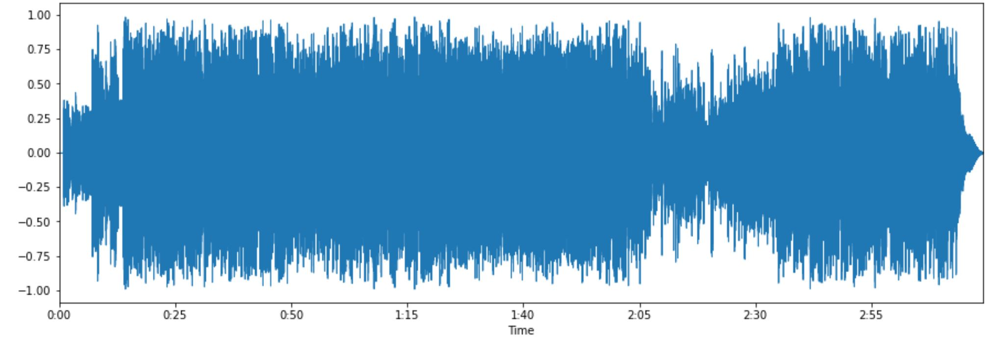
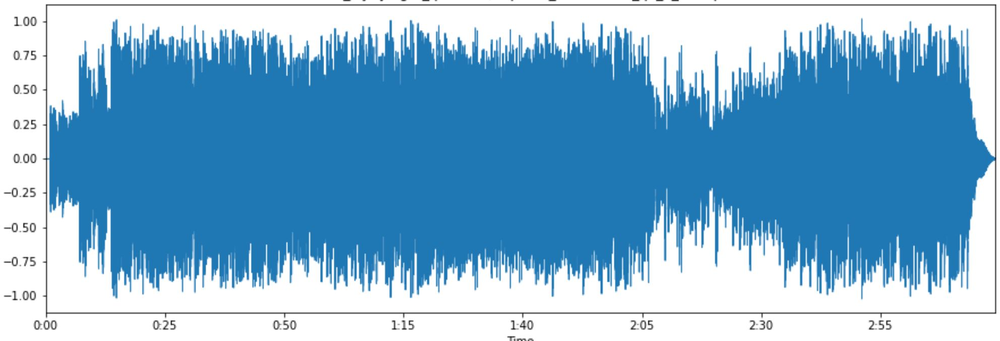

Áudio original (.wav)
O áudio analisado refere-se à música de nome Fly by night, da banda canadense Rush.
Áudio - O tamanho do áudio é muito grande para o Github
Para ouvir o áudio original, abra o hyperlink abaixo em outra aba do navegador
Aqui


Conversão wav em mp3, 64kbps, taxa fixa


Conversão wav em mp3, N=5, taxa variável
Conversão wav em mp3, N=9, taxa variável
